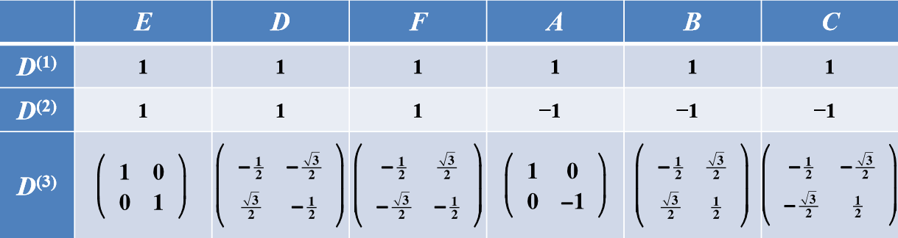

有限群的线性表示理论
最近在学群论，感觉老师上课为了让200个的同学都听懂，讲得太慢了= =，而且不一定还都讲懂了，这里我打算梳理一下知识脉络，不会具体推导公式，谈谈我自己的理解。其实就是一个目标：把群元素映射到矩阵，找到所有可能的映射矩阵。
群的线性表示
群的线性表示有两种物理含义：保持图形不变时坐标的变换规律和不变函数空间中函数的变换规律。
保持图形不变时坐标的变换规律
首先我们回到群元素的物理定义，群元素是一种使得对称性不变的操作，例如$D_3$群可以表示二维三角形操作不变性，$E$为恒等操作，$D,F$分别为绕z轴旋转$\pi/3$和$2\pi/3$的操作，$A,B,C$为绕三条对称轴旋转$\pi$操作。
若把每个变换前后的三角形坐标的对应关系记为：
\begin{align}
\left(\begin{array}{l}{x^{\prime}} \\ {y^{\prime}}\end{array}\right)=D(R)\left(\begin{array}{l}{x} \\ {y}\end{array}\right)
\end{align}每个操作都对应了一个二维矩阵，群元素与矩阵一一对应，群元素乘法规则和矩阵乘法规则也一一对应，故$D(G)$也构成一个群，与群$G$同构，那么就可以说$D(G)$是群$G$的一个线性表示，简称表示。
\begin{align}
\left\{\begin{array}{ll}{D(E)=\left(\begin{array}{cc}{1} & {0} \\ {0} & {1}\end{array}\right), \quad D(D)=\frac{1}{2}\left(\begin{array}{cc}{-1} & {-\sqrt{3}} \\ {\sqrt{3}} & {-1}\end{array}\right), \quad D(F)=\frac{1}{2}\left(\begin{array}{cc}{-1} & {\sqrt{3}} \\ {-\sqrt{3}} & {-1}\end{array}\right)} \\ {D(A)=\left(\begin{array}{cc}{1} & {0} \\ {0} & {-1}\end{array}\right), \quad D(B)=\frac{1}{2}\left(\begin{array}{cc}{-1} & {\sqrt{3}} \\ {\sqrt{3}} & {1}\end{array}\right), \quad D(C)=\frac{1}{2}\left(\begin{array}{cc}{-1} & {-\sqrt{3}} \\ {-\sqrt{3}} & {1}\end{array}\right)}\end{array}\right.
\end{align}这样做的好处在于具体化群元素，只要知道了每个群元素的表示矩阵，我们就算不知道群的乘法表也可以先用矩阵乘法算出矩阵，然后再找出对应的群元素进而得到乘法表，把抽象的群的乘法表示成了具体的矩阵运算。当然这样做的前提是群元素和表示矩阵是一一对应的，因为按照线性表示的定义，群$D(G)$与群$G$也可以是同态的，一个矩阵可以表示多个群元素，例如每个矩阵都是单位矩阵也是群的表示。
不变函数空间中函数的变换规律
接下来看物理学中用到的表示，稍微复杂一点。物理中经常用到标量函数$\psi$，例如表示空间中某点的物理量（密度、质量），当参考系发生变化时，坐标变化了，函数形式也要发生变化，但是物理量不会改变。考虑坐标变换$R$，在此变换下：
\begin{align}
\begin{array}{ll}{x \rightarrow x^{\prime}=R x,} x=R^{-1} x^{\prime} \\ {\psi(x) \rightarrow \psi^{\prime}\left(x^{\prime}\right)=\psi(x)}\end{array}
\end{align}引入标量函数变换算符$P_R$描述坐标变化$R$下标量函数的变化：
\begin{align}
\psi^{\prime} \equiv P_{R} \psi
\end{align}这样就有
\begin{align}
\psi^{\prime}(x)=P_{R} \psi(x)=\psi\left(R^{-1} x\right)
\end{align}$R$与$P_R$一一对应，可以证明群$G$和群$P_G$同构。同样的线性算符在参考系变换下也不会发生物理本质的变化，其变换规律为：
\begin{align}
L^{\prime}(x)=P_{R} L(x) P_{R}^{-1}
\end{align}在量子力学中对称变换非常重要，对称变换指的是在变换$R$对应算符$P_R$下，哈密顿算符不变。也就是说当$R$是系统的对称变换时，哈密顿算符与标量函数变换算符对易。
\begin{align}
H^{\prime}(x)=P_{R} H(x) P_{R}^{-1}=H(x) \quad \Leftrightarrow \quad\left[H(x), P_{R}\right]=\mathbf{0}
\end{align}当能级$E$是$m$重简并时，有$m$个线性无关的本征函数：
\begin{align}
H(x) \psi_{\mu}(x)=E \psi_{\mu}(x) \quad(\mu=1, 2, \cdots, m)
\end{align}这$m$个线性无关的本征函数的线性组合也是本征函数：
\begin{align}
H(x)\left[ \sum_{\nu=1}^{m} \psi_{\nu}(x) D_{\nu \mu}(R)\right]=E\left[ \sum_{\nu=1}^{m} \psi_{\nu}(x) D_{\nu \mu}(R)\right] \quad(\mu=1, 2, \cdots, m)
\end{align}$P_R$作用于本征函数后，仍然是哈密顿量同一能级的本征函数：
\begin{align}
H(x)\left[P_{R} \psi_{\mu}(x)\right]=E\left[P_{R} \psi_{\mu}(x)\right]
\end{align}则$P_R\psi_\mu(x)$只能为线性组合，也就是说能级为$E$的本征函数张成的$m$维函数空间对$P_R$的作用保持不变，仍然在同一个函数空间内。
\begin{align}
P_{R} \psi_{\mu}(x)=\sum_{\nu=1}^{m} \psi_{\nu}(x) D_{\nu \mu}(R)
\end{align}这样定义的$D(R)$与$R$一一或者一多对应，可以证明$D(G)$与$G$同构或者同态，群$D(G)$可以称为群$G$的一个线性表示。
群的线性表示定义
现在我们可以把群的线性表示教科书定义拿出来了：
群的线性表示：若行列式不为零的$m\times m$矩阵集合构成的群$D(G)$与已知群$G$同构或同态，则$D(G)$称为群$G$的一个$m$维线性表示，简称表示。
那么我们对同一个群得到不同的表示，以$D_3$为例：
- 一维恒等表示
$$D(E)=D(D)=D(F)=D(A)=D(B)=D(C)=1$$ - 一维非恒等表示
$$D(E)=D(D)=D(F)=−D(A)=−D(B)=−D(C)=1$$ - 二维表示
\begin{align}
\left\{\begin{array}{ll}{D(E)=\left(\begin{array}{cc}{1} & {0} \\ {0} & {1}\end{array}\right), \quad D(D)=\frac{1}{2}\left(\begin{array}{cc}{-1} & {-\sqrt{3}} \\ {\sqrt{3}} & {-1}\end{array}\right), \quad D(F)=\frac{1}{2}\left(\begin{array}{cc}{-1} & {\sqrt{3}} \\ {-\sqrt{3}} & {-1}\end{array}\right)} \\ {D(A)=\left(\begin{array}{cc}{1} & {0} \\ {0} & {-1}\end{array}\right), \quad D(B)=\frac{1}{2}\left(\begin{array}{cc}{-1} & {\sqrt{3}} \\ {\sqrt{3}} & {1}\end{array}\right), \quad D(C)=\frac{1}{2}\left(\begin{array}{cc}{-1} & {-\sqrt{3}} \\ {-\sqrt{3}} & {1}\end{array}\right)}\end{array}\right.
\end{align} - 三维表示
\begin{align}
\left\{\begin{array}{ll}{D(E)=\left(\begin{array}{ccc}{1} & {0} & {0} \\ {0} & {1} & {0} \\ {0} & {0} & {1}\end{array}\right),} \quad {D(D)=\frac{1}{2}\left(\begin{array}{ccc}{-1} & {-\sqrt{3}} & {0} \\ {\sqrt{3}} & {-1} & {0} \\ {0} & {0} & {2}\end{array}\right)} \\ {D(F)=\frac{1}{2}\left(\begin{array}{ccc}{-1} & {-\sqrt{3}} & {0} \\ {-\sqrt{3}} & {-1} & {0} \\ {0} & {0} & {2}\end{array}\right), \quad D(A)=\left(\begin{array}{ccc}{1} & {0} & {0} \\ {0} & {-1} & {0} \\ {0} & {0} & {-1}\end{array}\right)} \\ {D(B)=\frac{1}{2}\left(\begin{array}{ccc}{-1} & {\sqrt{3}} & {0} \\ {\sqrt{3}} & {1} & {0} \\ {0} & {0} & {-2}\end{array}\right), \quad D(C)=\frac{1}{2}\left(\begin{array}{rrr}{-1} & {-\sqrt{3}} & {0} \\ {-\sqrt{3}} & {1} & {0} \\ {0} & {0} & {-2}\end{array}\right)}\end{array}\right.
\end{align}甚至可以有更高维度的表示，那么就自然而然出现一些问题：如何找到所有维度的表示？是不是有无穷个表示？如何能简洁地写出这些表示？
简化
首先我们要对这些矩阵进行简化，有一些表示矩阵本质上是一样的，我们称为等价表示，还有一些表示矩阵可以写为一些表示矩阵的直和，我们可以直接约化。所以我们把问题简化为寻找不等价不可约表示。
等价表示
我们将构成不变函数空间称为表示空间，表示空间的基矢则为上述不变函数$\psi_{\nu}$，该基矢的任意线性组合$\varphi_{\mu}$仍然为基矢，那么$P_R$的矩阵形式也会发生变化，但是本质上是一样的，具体为一个相似变换：
$$\varphi_{\mu}=\sum_{\nu} \psi_{v} X_{\nu \mu} \quad P_{R} \varphi_{\mu}=\sum_{\lambda} \varphi_{\lambda} \bar{D}_{\lambda \mu}(R) \quad \bar{D}(R)=X^{-1} D(R) X$$
等价表示：若群$G$所有元素$R$在两个表示$D(G)$和$\bar{D}(G)$中的表示矩阵存在同一个相似变换关系，这两个表示称为等价表示，记为$D(G) \cong \bar{D}(G)$
还有一个比较重要的概念：特征标。特征标是表示矩阵的迹，即$\chi(R)=\mathbf{T} \mathbf{r} D(R)$。相似矩阵的迹相同，所以同一个类元素的表示和等价表示的特征标是相同的。那么反过来特征标相同，是否是同一个类或等价表示呢？对于前一个明显不是，比如表示矩阵都取一维单位矩阵，特征标都是1，但不是同一个类的。但后一个是对的，特征标一样的表示一定是等价的，这个在后面表示理论会解释。则两表示等价的充要条件为特征标相同。
定理：有限群的表示等价于幺正表示，两个等价的幺正表示一定可以通过幺正的相似表换相联系。
这样我们可以把所有表示转化为幺正表示研究，幺正矩阵有很好性质，例如行列正交。
约化表示
当我们发现表示矩阵有很多0元时，可以知道表示空间存在子空间，不需要那么多函数基矢就能表示一部分空间。所以我们可以定义可约表示
可约表示：若群$G$的表示$D(G)$的每一个表示矩阵$D(R)$都能通过同一相似变换$X$化成同一形式的阶梯矩阵
$$X^{-1} D(R) X=\left(\begin{array}{cc}{D^{(1)}(R)} & {M(R)} \\ {0} & {D^{(2)}(R)}\end{array}\right)$$则此表示称为可约表示，否则称为不可约表示。当$M(R)=0$时，称为完全可约表示。
我们知道任何表示都可以写为幺正表示，那么可约表示中的$M(R)$一定可以通过相似表换变为0，那么可约表示一定是完全可约的。
定理：有限群的可约表示是完全可约的。
群代数
接下来我们要找出有限群的所有的不等价不可约表示。需要引入群空间，即以群元素为基矢的空间，还是以$D_3$群为例子：

将每种表示的每个元素对应表示矩阵当做群空间的矢量，这样$D_3$群的一维恒等表示、一维非恒等表示和二维表示变为6个6维矢量：
6维矢量空间只有6的线性独立的矢量，可以验证这6个矢量是正交的，这是由正交定理保障的，也是完备的，这是由完备性定理保障的。那么如果还有新的表示，构成的群空间矢量一定可以用前6个矢量线性组合得到，也就是说我们找到了所有的线性独立群空间矢量，并且有对应的表示，那么我们就找到了所有的不等价不可约表示。
正交定理：有限群的不等价不可约幺正表示$D^i(G)$和$D^j(G)$的矩阵元素，作为群空间的矢量，满足正交关系
$$\sum_{R \in G} D_{\mu \rho}^{i}(R)^{*} D_{\nu \lambda}^{j}(R)=\frac{g}{m_{j}} \delta_{i j} \delta_{\mu \nu} \delta_{\rho \lambda}$$其中$g$为群$G$的阶数，$m_j$为表示矩阵$D^j$的维数。
完备性定理：有限群不等价不可约表示维数的平方和等于群的阶数。
由正交定理，可以推得将特征标作为群空间矢量也是正交完备的，该矢量的维度为类的个数，那么不等价不可约表示的数目等于群的等价类的个数。
下面给出两条推论，可以方便快速判断是否等价和可约。
等价：有限群两等价表示的充要条件是每个元素在两表示中特征标对应相等
不可约：有限群表示为不可约表示的充要条件是$\sum_{R \in G}|\chi(R)|^{2}=g$
群$G$的可约表示$D(G)$可约化为若干不可约表示$D_j(G)$的直和：
$$X^{-1} D(R) X=\bigoplus_{j} a_{j} D^{j}(R), \quad \chi(R)=\sum_{j} a_{j} \chi^{j}(R)$$那么不可约表示的重数$a_{j}$为：
$$a_{j}=\frac{1}{g} \sum_{R \in G} \chi^{j}(R)^{*} \chi(R)$$